01THE STORY SO FAR
Longmont, Colorado. Night. The streetlamps gave up hours ago, and the only lights still burning belong to three buildings that should have been empty for decades: the Opera House on Main Street, the Sugar Mill at the edge of town, and the Hotel Imperial, whose transom glows like a lit match over a locked door.
Inside each of them waits The Games Master — a showman in a black suit and a red skull mask, leaning on a cane topped with a grinning skull. He has scattered his keepsakes through every floor of every building: opera programmes, factory punch cards, hotel room keys. He wants you to collect them. That's the game. He invented it, he referees it, and he plays for the other side.
...the town is his board. you are his piece...
Find every item in a building and its exit will accept you. Survive all three buildings and the night ends. There is exactly one rule, and breaking it is how most guests end their stay: do not look at him.
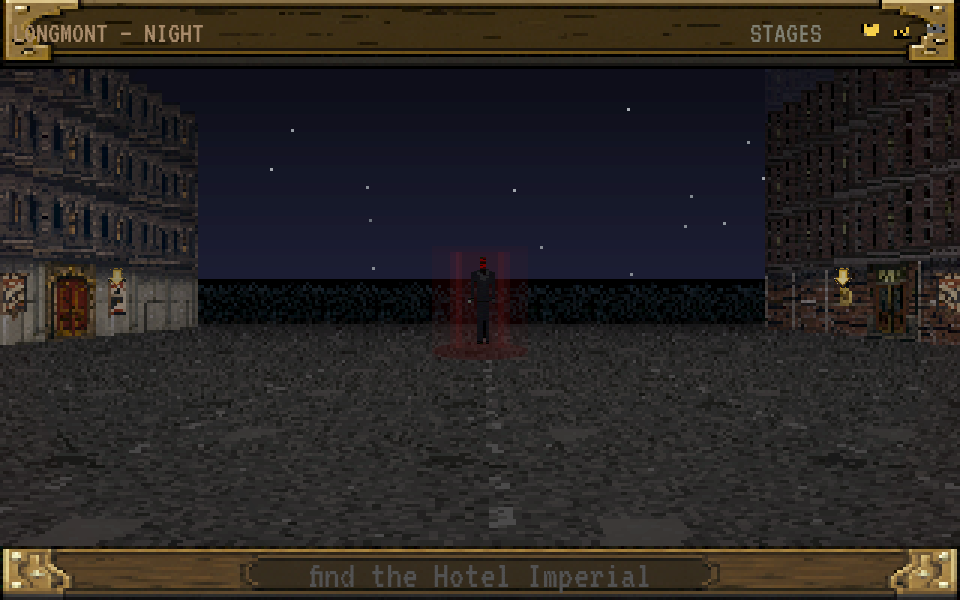
02HOW A NIGHT UNFOLDS
From the title screen, press Enter and you'll wake on south Main Street. The town is the hub between stages — walk it freely; nothing out here can catch you. Each building entrance glows with a gold arrow. Stand at a door and press Space to step inside.
The buildings unlock in order. The Opera House is always open. Beat it, and the chains fall off the Sugar Mill. Beat the Mill, and the Hotel Imperial starts taking guests. Locked doors show a red arrow and tell you what they want first.
THE LOOP
Enter a building → collect every item on every floor → reach the building's exit → return to town → repeat. Get caught, and the performance is over — press R to limp back to the street and try again. Progress within a building does not survive a catch. Your completed stages always do.
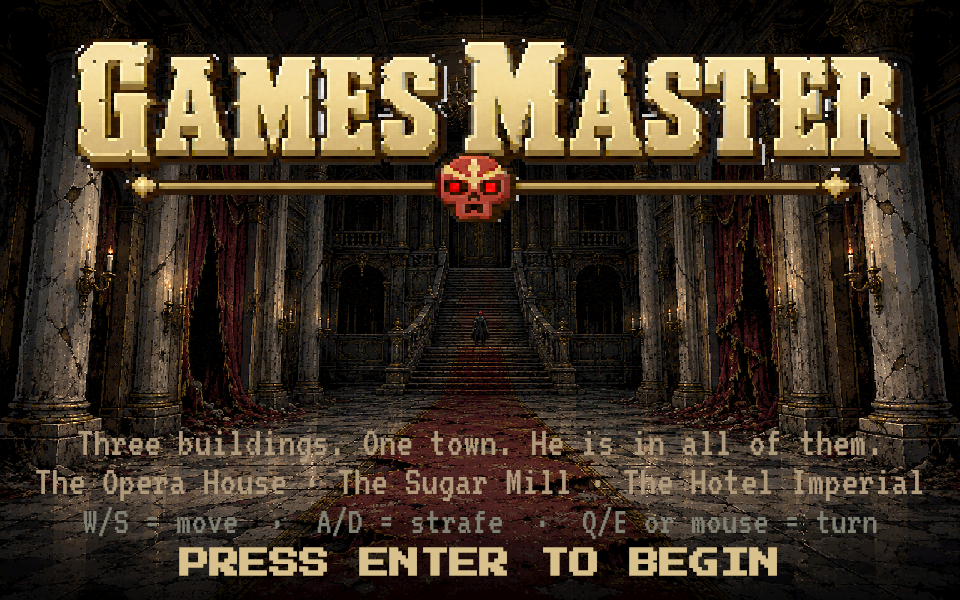
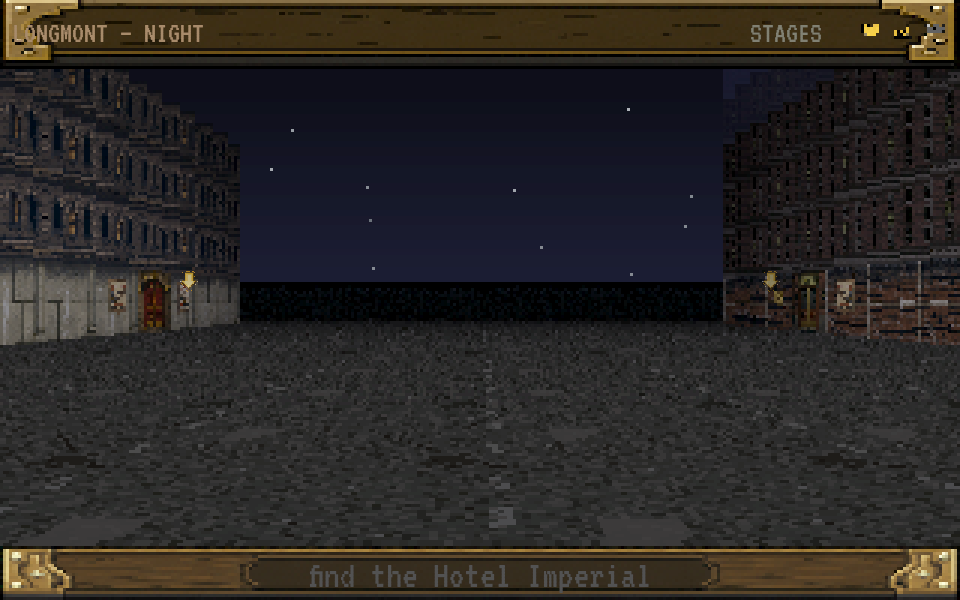
03CONTROLS
| INPUT | ACTION |
|---|---|
| W / S or ↑ / ↓ | Move forward / back |
| A / D or ← / → | Strafe left / right |
| Q / E · Mouse · Shift+strafe | Turn. Click the screen once to capture the mouse. |
| Space or F | Collect item · use stairs · enter a building · escape through an exit |
| Tab (hold) | Floor map — 3 charges per building, ~3 seconds each. Free and unlimited in town. |
| M | Mute audio (you will regret losing the heartbeat warning) |
| R | After a win or a catch — return to town |
| Esc | Release the mouse |
There is no run button. You are always walking briskly — and that is, mercifully, faster than he walks. Usually.
04THE TOWN OF LONGMONT
The overworld is safe ground — the only place in the game where being caught is impossible. Use it to breathe. Stress drains slowly out here (and any panic you carry out of a building is capped well below the danger line).
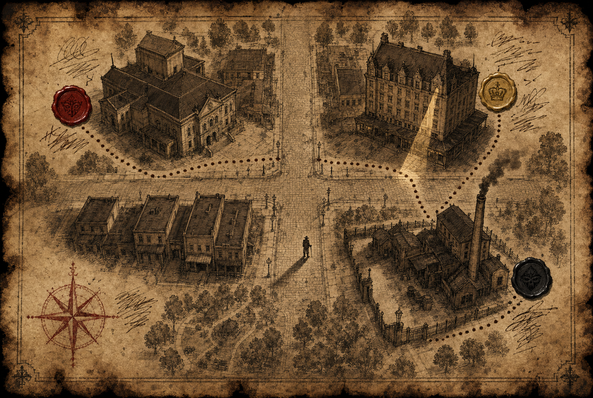
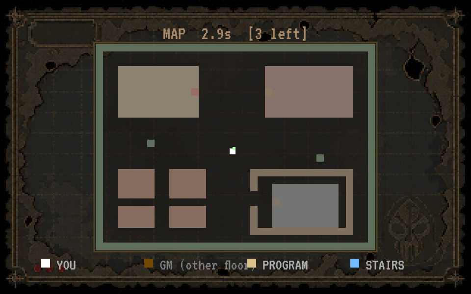
| BUILDING | WHERE | UNLOCKED BY |
|---|---|---|
| The Opera House | West side of Main St, the grand stone facade | Always open |
| The Sugar Mill | South-east, inside the fenced works yard (enter the gate on its west side) | Finishing the Opera House |
| The Hotel Imperial | East side of Main St, opposite the Opera House | Finishing the Sugar Mill |
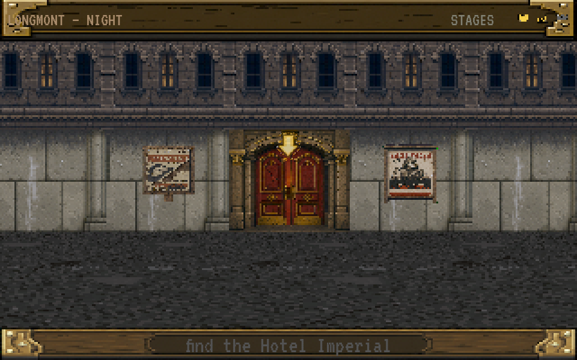
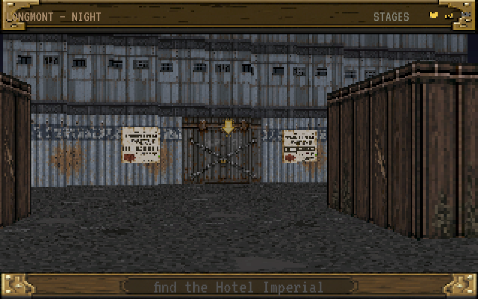
THE STALKER
Every so often — roughly every nine to nineteen seconds of street time — the Games Master appears somewhere in town and simply stands there, facing you. He cannot hurt you outdoors. But:
- Walk within about 5½ tiles of him, or hold your stare on him for more than 1.3 seconds, and he vanishes — with a gutter of darkness, a whisper, and a +12 spike of stress that you'll carry to the next door.
- If you want to enter a building calm, don't investigate him. Glance, note the position, look away, keep walking. He gets bored after nine seconds.
05THE ONE RULE
Inside a building, the Games Master begins a chase under exactly one condition — eye contact. All three of these must be true at the same moment:
- He is within 9 tiles of you.
- He is near the middle of your view — the detection cone is a little wider than your screen, so if he's on screen at all and close, assume he counts. Sidelong glances are not safe glances.
- There is a clear line of sight — no wall between you.
Proximity alone does not trigger him. You can stand with your back to him in the same room — heart hammering, screen shaking — and he will keep shuffling his patrol. The moment your eyes find him, he comes.
Breaking a chase: turn a corner, put architecture between you. After 4 seconds without seeing you he gives up the sprint and walks to the last place he saw you, pokes around for about 5 seconds, then returns to his rounds. He is slower than you in open ground — a chase you can't survive is a chase that ended in a dead end.
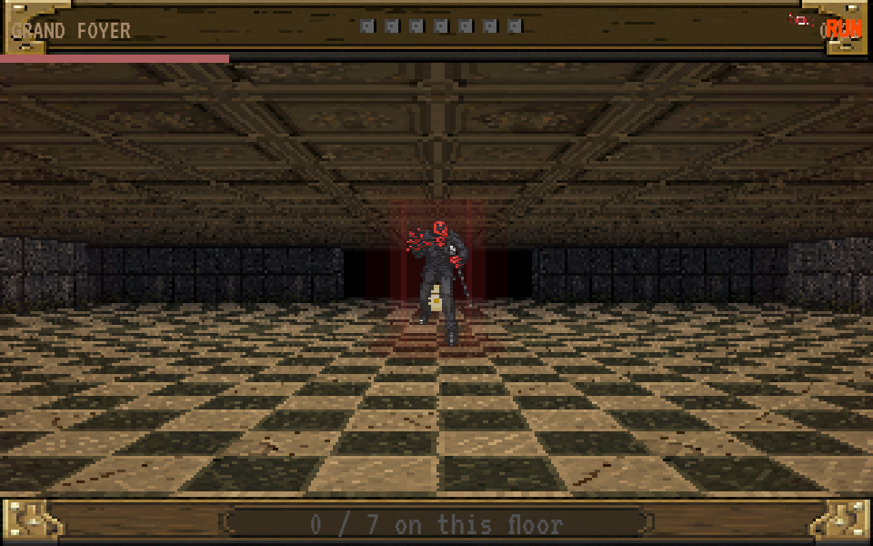
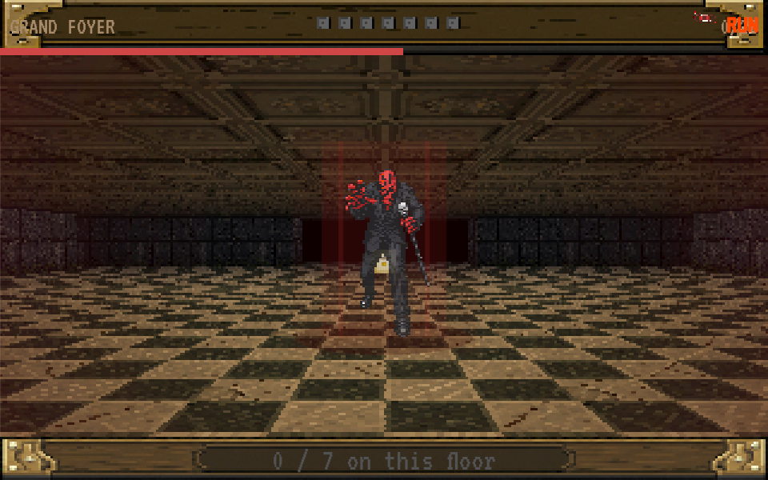
If he does catch you, there is a 4% chance the stage lights misfire and he warps away to another floor instead — the screen flashes LUCKY. Do not build a strategy on a coin that lands on its edge.
06DOSSIER: THE GAMES MASTER
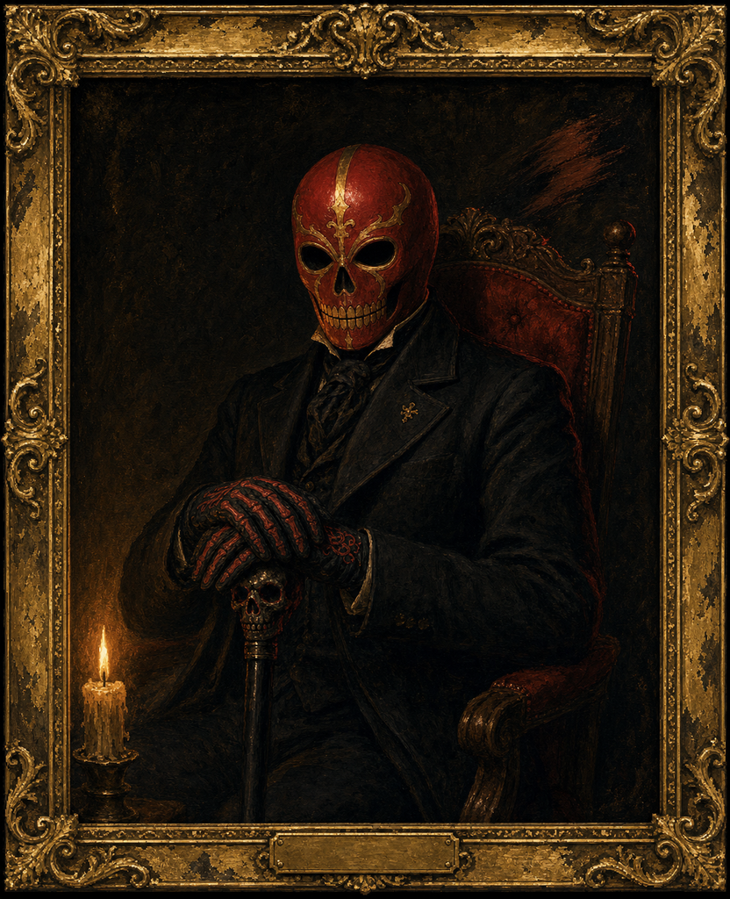
 RETREATsafe to move — he faces away
RETREATsafe to move — he faces awayThere is one of him, and he is always somewhere in the building with you. He moves between floors like you do — by walking to a staircase. Reading his sprite tells you his facing; reading his behaviour tells you his state:
He walks fixed waypoint circuits through each floor, pathfinding around walls. Slow — about a third of your speed. The red glow at the screen's edge and your rising stress are your proximity warnings.
Direct pursuit at roughly double patrol speed — still about 30% slower than you in a straight line. He keeps chasing as long as he can see you, and for 4 seconds of memory after he can't. Cornering yourself is the only way he wins a footrace.
After a broken chase he walks to your last known position and lingers about 5 seconds. He is not on his usual route during this — don't double back into the room you escaped from.
On 40% of his waypoint stops he breaks off and walks to an uncollected item on his floor, then stands over it for about 9 seconds. The thing you need most is the thing he haunts. Approach every remaining item like it's rigged — hug walls, lead with your ears, don't barrel in facing forward.
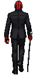
Roughly every 13 seconds he considers changing floors, and 82% of the time he moves toward yours. He physically walks to a staircase, so a glimpse of his back near stairs means a floor swap. After arriving, there's a 30% chance he camps the stairwell for 6 seconds — pause before charging up stairs he might have just used.
If your stress crosses 65 while he's on your floor, he no longer needs to see you. He pathfinds directly to your position, re-aiming every few seconds, until your stress falls back under 50. The HUD flashes HE FEELS YOUR FEAR. Panic is a beacon — see the next chapter for how to stop broadcasting.
ESCALATION — THE COLLECTOR'S TAX
Every item you take winds his clockwork tighter. From your first pickup to your last, his walking and chasing speed climbs by up to +55%, and his floor-change timer shrinks to under half. With a full satchel he is nearly as fast as you and almost never stays put. Plan your exit route before you take the final item — the last 10% of a building is a different, meaner game.
07THE STRESS SYSTEM
The thin bar under the HUD is your nervous system, scored 0–100. The Games Master doesn't just hunt your body — he farms your fear.
WHAT RAISES IT
| SOURCE | EFFECT |
|---|---|
| Him, nearby | Up to +7/second when he's on your floor within 7 tiles — scaling with closeness |
| Being chased | +11/second. Long chases cook you even when you escape |
| Scare events | +10 to +16 instantly (see below) |
| The street stalker | +12 if you approach or stare him down |
WHAT LOWERS IT
Distance and time. Stress decays about 1.6 points per second whenever he isn't near and isn't chasing. Entering a building always starts you at a baseline of 18. The cure for a screaming heartbeat is two floors of separation and twenty seconds of quiet collecting.
SCARE EVENTS
Every 22–46 seconds inside a building, the house plays a trick. None of them can hurt you — except through the meter:
- The lights die — the world goes near-black for a second or so.
- A whisper — ...he is counting your steps... drifts across the screen.
- A figure ahead — the Games Master flickers into view 6–11 tiles in front of you and is gone in half a second. It was never him. It still counts against your nerves — and it cannot trigger a chase, so don't bolt blindly into a real corner.
THE PANIC SPIRAL — AND HOW TO BREAK IT
Stress is the game's trap: he gets close → stress climbs → at 65 he hunts → hunting keeps him close → stress climbs faster. The spiral has one exit: leave the floor. He needs seconds to re-path and stairs to follow; the meter bleeds down meanwhile. When the heartbeat starts (55), treat it as a fire alarm — finish nothing, grab nothing, change floors now, before the 65 line, not after.
08YOUR TOOLS
THE MAP (TAB)
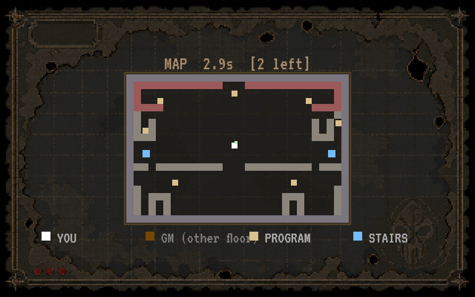
- Three charges per building, about three seconds each. The pips in the parchment corner count what's left. Town maps are free.
- The game does not pause. Never open the map mid-chase.
- Best uses: one charge on arriving at a complex floor; one charge when hunting your last two items; one held in reserve for the post-escalation endgame.
- He shows up red only if he's on your floor. A clean map with no red square is the safest news in the game — sweep fast while it's true.
READING THE HUD
| SIGNAL | MEANING |
|---|---|
| Floor name (top left) | Where you are; the bar beneath it is stress |
| Pips (top centre) | Items found on this floor |
| Counter (top right) | Building total — drives his escalation, so it's also his power meter |
| DON'T LOOK (flashing) | He is within 6 tiles. Your camera is now a weapon pointed at yourself |
| RUN | Self-explanatory |
| Red edge-glow / vignette | Proximity heat — brighter is closer |
| Blue arrows | Stairs. Gold arrows: building doors (town). Bottom bar: any Space prompt in range |
THE LUCKY BREAK
One catch in twenty-five (4%) fails: white flash, LUCKY stamp, and he is hurled to a random other floor with his timers reset. It is a gift, not a mechanic. Say thank you and change floors before he walks back.
09STAGE I — THE OPERA HOUSE
- Grand Foyer — open stone hall, reception desk, side rooms. The exit doors are here.
- The Auditorium — stage, crimson curtains, private boxes. Long sightlines: his 9-tile gaze loves this room.
- Upper Gallery — wood-panelled warren of salons. Short sightlines favour you.
- The Flies — rigging loft over the stage. Cramped catwalk corridors; never get cornered at the loft's dead ends.
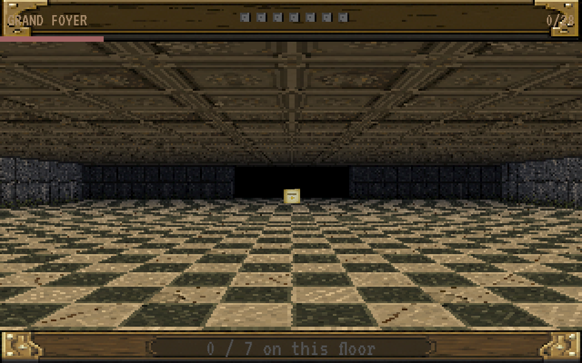
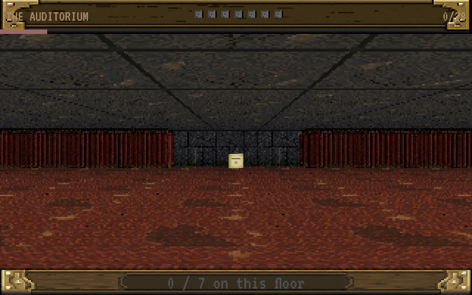
STRATEGY
- Work top-down. The exit is on Floor 1 — climb to The Flies early and sweep downward, so the escalated endgame happens next to the front doors, not four staircases from them.
- The Auditorium's open hall is his best hunting ground and yours: you can see him from far outside his 9-tile trigger range. Track him at a distance, then sweep the half of the room he isn't in.
- Curtained stage pockets and box seats break line of sight instantly — duck behind crimson when the vignette flares.
- Both staircases sit mid-floor on the east and west walls. If he camps one, the other is a full room away — always know your second exit.
10STAGE II — THE SUGAR MILL
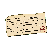
40 punch cards — 5 per floor- Beet Yard — open concrete yard, scattered mound pillars.
- Wash House — nested flume corridors. A maze; spend a map charge here.
- Slice Floor — machine blocks in tight lanes.
- Diffusion Hall — ranks of vat columns; rhythmic, easy to learn.
- Lime House — four kiln chambers off a central crossing. Chamber doors face the middle corridor — in and out fast.
- Evaporator Gallery — pipe-lined halls (pictured below).
- Pan House — open floor, centrifuge pillars.
- Sugar Tower — office warren below, crystal vault above. The roof hatch is at the tower's north face.
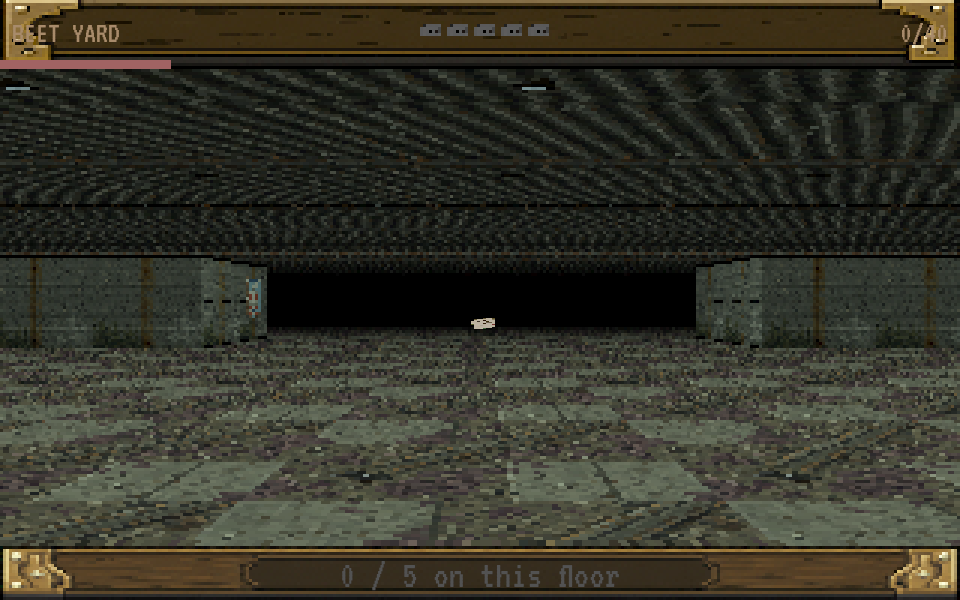
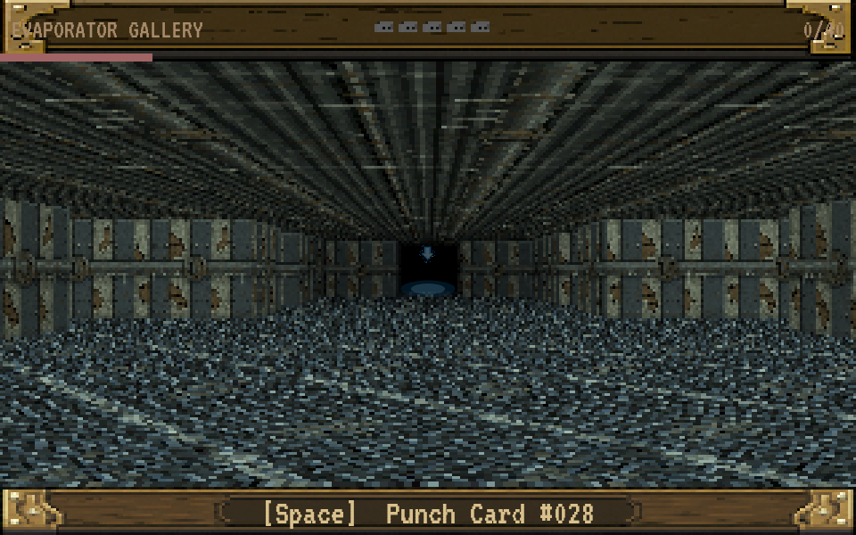
STRATEGY
- The exit is at the top. Invert the Opera plan: clear from the Beet Yard upward, leaving the Sugar Tower's five cards for last. Your final pickup should be steps from the roof hatch.
- Eight floors dilute him — he can only haunt one at a time, and his 82% follow bias means you control where he goes. Bounce two floors away when he arrives; sweep in the gap.
- The Wash House and the Tower offices are chase-killers for him — tight corners shred his line of sight. They're also ambush heaven: walk those item rooms wall-first.
- Single ladders link each floor (alternating east/west walls). Floor-change camping is deadlier here than anywhere — give every ladder landing two seconds of side-eye before you commit.
- The kiln chambers in the Lime House have one door each. Check the corridor crossing for him before entering a kiln. Never be inside one when the whisper hits.
11STAGE III — THE HOTEL IMPERIAL
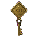
40 room keys — 4 per floor- The Lobby — mahogany and gilt, the front desk island.
- Grand Ballroom — column grid, stage at the north wall.
- Kitchen & Dining — dining tables west, kitchen counters and cold store east.
- Guest Floor II — classic double-loaded corridor, rooms both sides.
- Guest Floor III — ring corridor around an inner block. You can always run a full loop — so can he.
- Guest Floor IV — cross-corridors, four quadrant suites.
- Honeymoon Suites — four grand suites off a cross of corridors.
- Maids' Quarters — narrow cell slots; half are dead ends. Memorize which.
- Service Attic — crate maze under the roof beams.
- The Penthouse — the Master Suite's double doors stand at the north centre. All 40 keys open them.
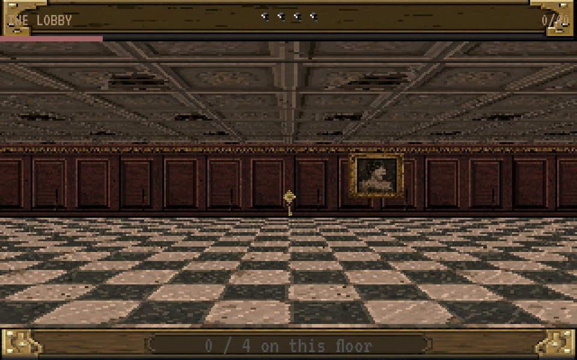
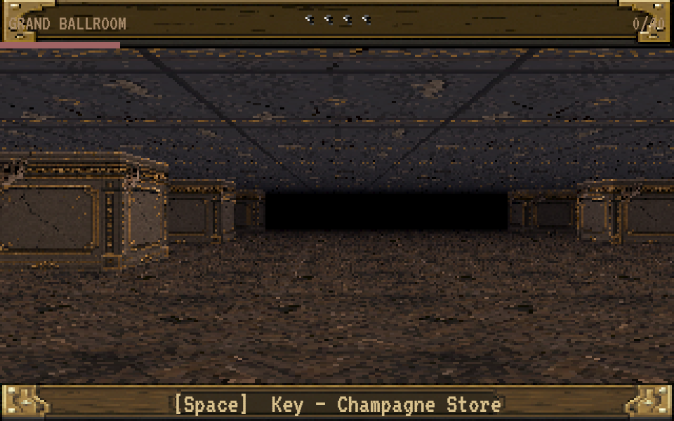
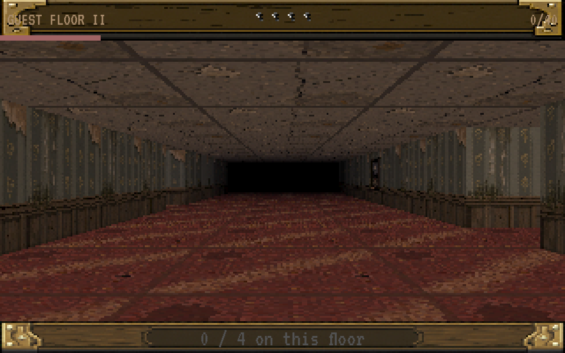
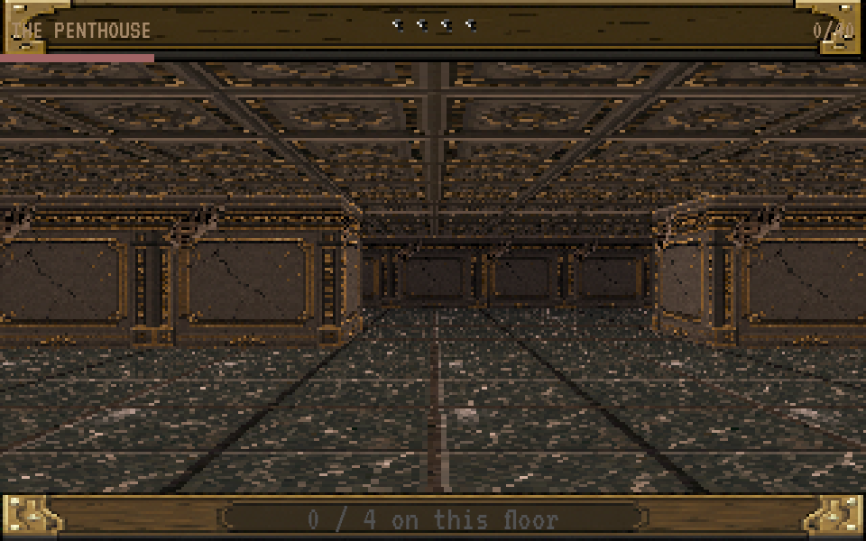
STRATEGY
- Climb as you clear. Exit's on 10: sweep 1 → 9 in order and save the four Penthouse keys for the very end. At full escalation you want one staircase between you and the Master Suite, not nine.
- Ten floors is your biggest safety margin in the game — vertical distance is free stress decay. Whenever the heartbeat starts, two flights of separation resets the encounter.
- Guest corridors are eye-contact tunnels: if he's in your corridor within 9 tiles, you're lit. Cross corridors by entering rooms and cutting through the connecting doors.
- The Maids' Quarters punish panic — three of the cell slots are blind pockets. Walk them calm (under 55 stress) or skip them until he's floors away.
- In the Ballroom and Lobby, use the columns the way he can't: orbiting a single column breaks both his line of sight and his lunge line.
- The final climb — keys 37, 38, 39, 40 — happens against a Games Master at +55% speed who changes floors every ~6 seconds at an 82% bias toward you. Pre-plan: map charge, route, both staircases, then take the keys in one continuous run. Hesitation collects you.
12THE SURVIVOR'S COMPENDIUM
THE TEN COMMANDMENTS
- 1. The camera is a trigger. Within 9 tiles, looking is losing. Navigate dangerous rooms with him deliberately kept off-screen — strafe with your shoulder to him.
- 2. You are faster. Corners aren't. He never out-runs you; he out-positions you. Before entering any room, know its second exit. No second exit? Then it's a vault, and you go in only when the map shows no red.
- 3. Walls are armour. Line of sight gates both the chase trigger and chase persistence. One wall, four seconds, and any pursuit dies.
- 4. Stress is a leash you hold. Below 45 you're invisible to everything but his eyes. Above 65 you're a lighthouse. The difference is usually one floor of distance held for twenty seconds.
- 5. He goes where you were. 82% floor-follow means your floor history is bait. Pattern: arrive, sweep half, let him arrive, leave, sweep elsewhere, return for the rest.
- 6. Items are traps after the midpoint. 40% ambush odds on his stops means late-game pickups deserve a corner-peek first. If he's lurking, collect elsewhere — ambushes expire in 9 seconds.
- 7. Respect arrival lag. When he takes the stairs to your floor, he might camp the landing for 6 seconds. When fleeing to stairs, prefer the staircase he didn't just use.
- 8. Scares lie; the meter doesn't. Flickers, whispers, phantom silhouettes — fake. The stress they add — real. After any scare, glance at your bar before your next move.
- 9. Bank your maps. Three charges: one to learn the floor, one to find the stragglers, one for the endgame. Spending two on the same floor is how runs end.
- 10. The last item starts the real game. Escalation peaks; he is fast, restless, and probably en route. Touch the final item only when the path to the exit is already in your head.
READING HIM WITHOUT LOOKING
You have four senses that aren't eye contact, and none of them trigger him: the red vignette (distance-scaled proximity), the stress bar's climb rate (faster = closer), the DON'T LOOK warning (inside 6 tiles), and the map's red square. Veterans cross entire floors on instruments alone, camera glued to the safe wall.
THE OPENING, MIDGAME, ENDGAME
| PHASE | HIS SPEED | YOUR PLAY |
|---|---|---|
| Opening (0–30%) | Slow, predictable | Sweep greedily. Learn staircases. Spend a map charge. Take risks now — they're cheap. |
| Midgame (30–70%) | Noticeably quicker | Ambushes matter now. Sweep floors he's not on; rotate when he follows. Keep stress under the heartbeat. |
| Endgame (70–100%) | +40–55%, hyperactive | One continuous, pre-planned route. Items nearest the exit go last. Never linger; never backtrack without cause. |
13APPENDIX — THE NUMBERS
For the players who read the gears. All figures from the machine itself.
| RULE | VALUE |
|---|---|
| Your speed vs his patrol / chase | 0.055 vs 0.018 / 0.038 tiles·tick — you outpace even his sprint by ~45% |
| Chase trigger | ≤ 9 tiles + clear line of sight + he's within ~39° of your view centre (screen half-width ≈ 33°) |
| Catch range / lucky escape | 0.55 tiles / 4% warp-away chance |
| Chase memory / search time | 4 s without sight ends the chase → ~5 s searching your last position |
| Floor change | every ~13 s (±7.5 s), 82% toward your floor; walks to real stairs, no teleporting |
| Ambush / stair camp | 40% per waypoint, 9 s lurk · 30% after floor change, 6 s camp |
| Hunt mode | starts at stress ≥ 65, ends below 50; re-paths to you every 2.6 s at 1.15× patrol speed |
| Escalation at 100% collected | speed ×1.55 · floor-change wait ×0.45 |
| Stress gains | proximity ≤ 7 tiles: up to +7/s · chase: +11/s · scares: +10–16 · stalker: +12 |
| Stress relief | −1.6/s when calm · building entry baseline 18 · town carry-over cap 30 |
| Stress thresholds | 18 vignette · 45 shake · 55 heartbeat · 65 hunt |
| Scare cadence | one event every 22–46 s: lights (~35%), whisper (~35%), phantom figure (~30%) |
| Street stalker | appears every 9–19 s; vanishes inside 5.5 tiles, after 1.3 s of staring, or 9 s |
| Map overlay | 3 charges per building, ~3 s each; unlimited in town; game keeps running |
| Pickup / interact range | 1.1 tiles for items · 1.5 tiles for stairs, doors, exits |